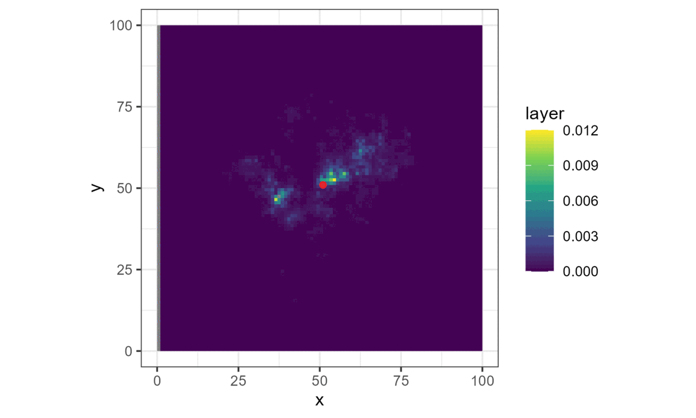

Step Selection Intuition
![]()
In this section we hope to provide some intuition for how we set up the deepSSF model, and how we simulated from it, such that it is easier to follow the paper and the code. We hope that is is also helpful understanding how to simulate from step selection functions more generally as well.
Firstly, when we have animal movement data, we can consider it as a series of steps, each with a step length and a turning angle:

If we aggregate every step across the trajectory (which may be many thousands of steps long), the step lengths and turning angles form distributions:

If we wanted to simulate from this movement process, we could simply sample values from these step length and turning angle distributions (either the observed values or by fitting parametric distributions and sampling from those), which we could be a correlated random walk; correlated as it has persistence in some direction, usually forwards. We can consider the step lengths and turning angles as a two-dimensional distribution (here they aren’t correlated but they can be).

However, animals also respond to environmental features. If we take the local landscape that is within the range of movement, we can imagine this landscape being comprised of different components, such as the vegetation (described through something like Normalised Difference Vegetation Index - NDVI), how dense the canopy is, or what the terrain is like.

We then need some way to describe or quantify a relationship between the animal and its surrounding habitat. One way to do this is by using (log-)linear relationships, where increasing values of the covariate lead to increasing or decreasing selection, or via quadratic relationships which add some more flexibility. These relationships are then encoded in coefficients, which may be positive or negative. If we then sum these outputs together (which are then typically exponentiated), we get a habitat selection probability surface. Something like this is usually called a resource selection function.

If we then combine those surfaces together (by adding on the log-scale or multiplying on the natural probability scale), we get the probability of the next step that the animal may take.

Essentially, we have (simplistically) described a step selection function (SSF), where the probability of the next step is described by a movement process and a habitat selection process.
Note: the movement parameters are typically estimated at the same time as the habitat selection, resulting in movement distributions that would be observed in the absence of any external covariates, also called the ‘selection-free movement kernel’ (Avgar et al. 2016).

Once we have a model with parameters that describe the next-step probability surface, we can simulate from it. We do this by choosing a starting location, generating the nest-step probability surface, and then sampling from it with respect to the probability weights. This location then becomes the starting point for the next step, and the process repeats until a trajectory is generated. This is now a biased correlated random walk, as there is bias towards certain habitat, and correlation in the movement process (Duchesne, Fortin, and Rivest 2015).
Here brighter colours denote higher selection values.

This is all we need for a basic simulation of animal movement that has a movement and a habitat selection process. However, animal movement is complex. The relationship between the animal and the surrounding covariates is unlikely to follow a linear or quadratic relationship, and the animal may not be responding to only the covariate values in particular pixels, but to broader habitat features that are described by specific arrangements of pixels. The animal’s relationship will also be responsive to interactions between covariates as well, i.e., NDVI will be selected differently depending on the terrain.
Animal movement is also dynamic across multiple time-scales, such as daily movements that also change across the course of the year. We explored fine-scale temporal dynamics using SSFs in another paper (Forrest et al. 2024), showing that the movement and habitat selection of buffalo change continuously throughout the day, but having daily selection that also changed across seasons (within the same model) was quite difficult and would have been hard to estimate the parameters.
A promising approach for including temporal dynamics and interactions of covariates is to use smooth terms, such as what is done in Generalised Additive Models (GAMs), with SSFs (Klappstein et al. 2024).
However, we opted for a different approach by using deep learning. Deep learning can take in spatial covariates as inputs directly (obviating the need to randomly sample absence points), allowing for spatial features to influence movement, all covariates interact and the model can represent complex relationships between the animal and the surrounding habitat, and very flexible relationships to time can be represented.
While there are some costs to the explainability of the model, we use a (relatively) small network with outputs that indicate what environmental information the animal is selecting for.
To train the model, we use local covariate layers (as shown above) as inputs, along with multiple representations of time, as inputs at every step, and the model outputs selection surfaces for the movement and habitat selection processes, as depicted above.
Head to the deepSSF Model Overview tab for an overview of the model.
References
Citation
@online{forrest2025,
author = {Forrest, Scott},
title = {Step {Selection} {Intuition}},
date = {2025-02-15},
url = {https://swforrest.github.io/deepSSF/step_selection_intuition.html},
langid = {en}
}